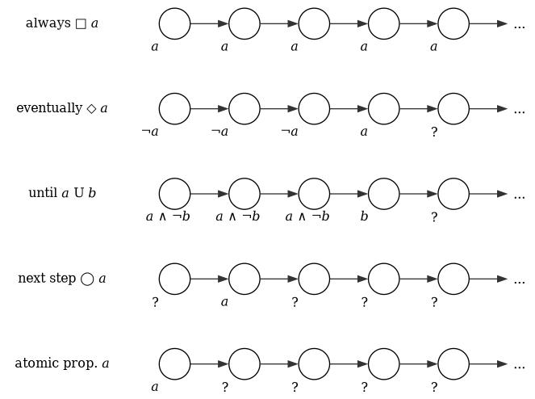

Linear Temporal Logic
For reactive systems, correctness depends on the executions of the system - not only on the input and output of a computation - and on fairness issues. Temporal logic is a formalism par excellence for treating these aspects. Temporal logic extends propositional or predicate logic by modalities that permit to referral to the infinite behavior of a reactive system. They provide a very intuitive but mathematically precise notation for expressing properties about the relation between the state labels in executions, i.e., LT properties. Temporal logics and related modal logics have been studied in ancient times in different areas such as philosophy. Their application to verifying complex computer systems was proposed by Pnueli in the late seventies.
(…)
The elementary temporal modalities that are present in most temporal logics include the operators:
- \(\Diamond\) "Eventually" (eventually in the future)
- \(\Box\) "Always" (now and forever in the future)
The underlying nature of time in temporal logics can be either linear or branching. In the linear view, at each moment in time there is a single successor moment, whereas in the branching view it has a branching, tree-like structure, where time may split into alternative courses.1
Syntax
The basic ingredients of LTL-formulae are atomic propositions (state labels \(a \in \texttt{AP}\)), the Boolean connectors like conjunction ∧, and negation ¬, and two basic temporal modalities \(\bigcirc\) (pronounced "next") and \(\mathcal{U}\) (pronounced "until").
(…)
LTL formalae over the set \(\texttt{AP}\) of atomic propositions are formed according to the following grammar:
\[ \phi ::= \texttt{true} \mid a \mid \phi_1 \wedge \phi_2 \mid \lnot \phi \mid \bigcirc \phi \mid \phi_1 \, \mathcal{U} \, \phi_2 \]
where \(a \in \texttt{AP}\).
Derived Operators
Using the Boolean connectives ∧ and ¬, the full power of Propositional Logic is obtained:
\begin{equation} \begin{split} \phi_1 \lor \phi_2 & := \lnot (\lnot \phi_1 \land \lnot \phi_2) \\ \phi_1 \rightarrow \phi_2 & := \lnot \phi_1 \lor \phi_2 \\ \phi_1 \leftrightarrow \phi_2 & := (\phi_1 \rightarrow \phi_2) \land (\phi_2 \rightarrow \phi_1)\\ \phi_1 \oplus \phi_2 & := (\phi_1 \rightarrow \phi_2) \land (\phi_2 \rightarrow \phi_1) \end{split} \end{equation}The until operator allows to derive the temporal modalities \(\Diamond\) ("eventually", sometimes in the future) and \(\Box\) ("always", from now on forever) as follows:
\begin{equation} \begin{split} \Diamond \phi & := \texttt{true} \,\ \mathcal{U} \,\ \phi \\ \Box \phi & := \lnot \Diamond \lnot \phi \end{split} \end{equation}Also, some useful patterns are:
- \(\Box \Diamond \phi\) can be interpreted as "infinitely often".
- \(\Diamond \Box \phi\) can be interpreted as "eventually forever".

Semantics
- LTL formulas specify properties over traces.
- LT properties are defined over traces.
An LTL formula is uniquely associated a LT property.
Let \(\phi\) be an LTL formula over \(\texttt{AP}\). The LT property induced by \(\phi\) is
\[ \texttt{Words}(\phi) = \Big \{ \sigma \in (2^{\texttt{AP}})^{\omega} \mid \sigma \models \phi \Big \} \]
where the satisfaction relation \(\models \subseteq (2^{\texttt{AP}})^{\omega} \times \texttt{LTL}\) is the smallest relation such that
\begin{equation} \begin{split} \sigma & \models \texttt{true} \\ \sigma & \models a \leftrightarrow a \in A_0 (\text{i.e. } A_0 \models a) \\ \sigma & \models \phi_1 \wedge \phi_2 \leftrightarrow \sigma \models \phi_1 \land \sigma \models \phi_2 \\ \sigma & \models \lnot \phi \leftrightarrow \sigma \lnot\models \phi \\ \sigma & \models \bigcirc \phi \leftrightarrow \sigma[1 \ldots] = A_1 A_2 A_3 \ldots \models \phi \\ \sigma & \models \phi_1 \cup \phi_2 \leftrightarrow \exists j \geq 0. \sigma[j \ldots] \models \phi_2 \wedge \phi[i \ldots] \models \phi_1, \forall 0 \leq i < j \end{split} \end{equation}Here, \(\sigma[i \ldots]\) is a suffix \(A_{i} A_{i+1} A_{i+2} \ldots\) from \(\sigma\), starting from index \(i\). Given \(\sigma = A_0 A_1 A_2 \ldots \in (2^{\texttt{AP}})^{\omega}\), we can also derive the following:
\begin{equation} \begin{split} \sigma & \models \Diamond \phi \leftrightarrow \exists j \geq 0. \sigma[j \ldots] \models \phi \\ \sigma & \models \Box \phi \leftrightarrow \forall j \geq 0. \sigma[j \ldots] \models \phi \\ \text{(infinitely often) } \sigma & \models \Box \Diamond \phi \leftrightarrow \forall j \geq 0. \sigma[j \ldots] \models \phi \\ \text{(eventually forever) } \sigma & \models \Diamond \Box \phi \leftrightarrow \exists j \geq 0, \forall i \geq j. \sigma[i \ldots] \models \phi \\ \end{split} \end{equation}
Semantics of LTL over Paths and States
Let \(\texttt{TS} = (\texttt{S}, \texttt{Act}, \longrightarrow, \texttt{I}, \texttt{AP}, \texttt{L})\) be a transition system 2 without terminal states, and let \(\phi\) be an LTL-formalae over \(\texttt{AP}\).
For an infinite path fragment π of \(\texttt{TS}\), the satisfaction relation is defined by
\[ \pi \models \phi \iff trace(\pi) \models \phi \]
For state \(s \in S\), the satisfaction relation \(\models\) is defined by
\[ s \models \phi \iff \forall \pi \in \texttt{Paths}(s), \pi \models \phi \]
\(\texttt{TS}\) satisfies \(\phi\), denoted \(\texttt{TS} \models \phi\), if \(\texttt{Traces}(\texttt{TS}) \subseteq \texttt{Words}(\phi)\).
from this definition, it immediatly follows that
\begin{equation} \begin{split} \texttt{TS} \models \phi & \leftrightarrow \texttt{Traces}(\texttt{TS}) \subseteq \texttt{Words}(\phi) \\ & \leftrightarrow \texttt{TS} \models \texttt{Words}(\phi) \\ & \leftrightarrow \pi \models \phi, \forall \pi \in \texttt{Paths}(\texttt{TS}) \\ & \leftrightarrow s_0 \models \phi, \forall s_0 \in I \end{split} \end{equation}Thus, \(\texttt{TS} \models \phi\) if and only if \(s_0 \models \phi\) for all initial states \(s_0\) of \(\texttt{TS}\).
Semantics of Negation
For paths, it holds \(\pi \models \phi\) if and only if \(\pi \nvDash \lnot\phi\). This is due to the fact that
\[ \texttt{Words}(\lnot \phi) = (2^{\texttt{AP}})^{\omega} \setminus \texttt{Words}(\phi) \]
However, the statements \(\texttt{TS} \nvDash \phi\) and \(\texttt{TS} \models \lnot\phi\) are not equivalent in general, instead we have \(\texttt{TS} \models \lnot\phi \rightarrow \texttt{TS} \nvDash \phi\). Note that
\begin{equation} \begin{split} \texttt{TS} \nvDash \phi & \leftrightarrow \texttt{Traces}(\texttt{TS}) \nsubseteq \texttt{Words}(\phi) \\ & \leftrightarrow \texttt{Traces}(\texttt{TS}) \setminus \texttt{Words}(\phi) \neq \emptyset \\ & \leftrightarrow \texttt{Traces}(\texttt{TS}) \cap \texttt{Words}(\lnot \phi) \neq \emptyset \end{split} \end{equation}Thus, it is possible that a transition system (or a state) satisfies neither φ nor ¬φ. This is caused by the fact that there might be paths π1 and π2 in \(\texttt{TS}\) such that \(\pi_1 \models \phi\) and \(\pi_2 \models \lnot\phi\) (and there \(\pi_2 \nvDash \phi\)). In this case, \(\texttt{TS} \nvDash \phi\) and \(\texttt{TS} \nvDash \lnot \phi\) holds.
Equivallence of LTL Formulae
LTL formulae φ1, φ2 are equivalent, denoted ϕ1 ≡ ϕ2, if \(\texttt{Words}(\phi_1) = \texttt{Words}(\phi_2)\).